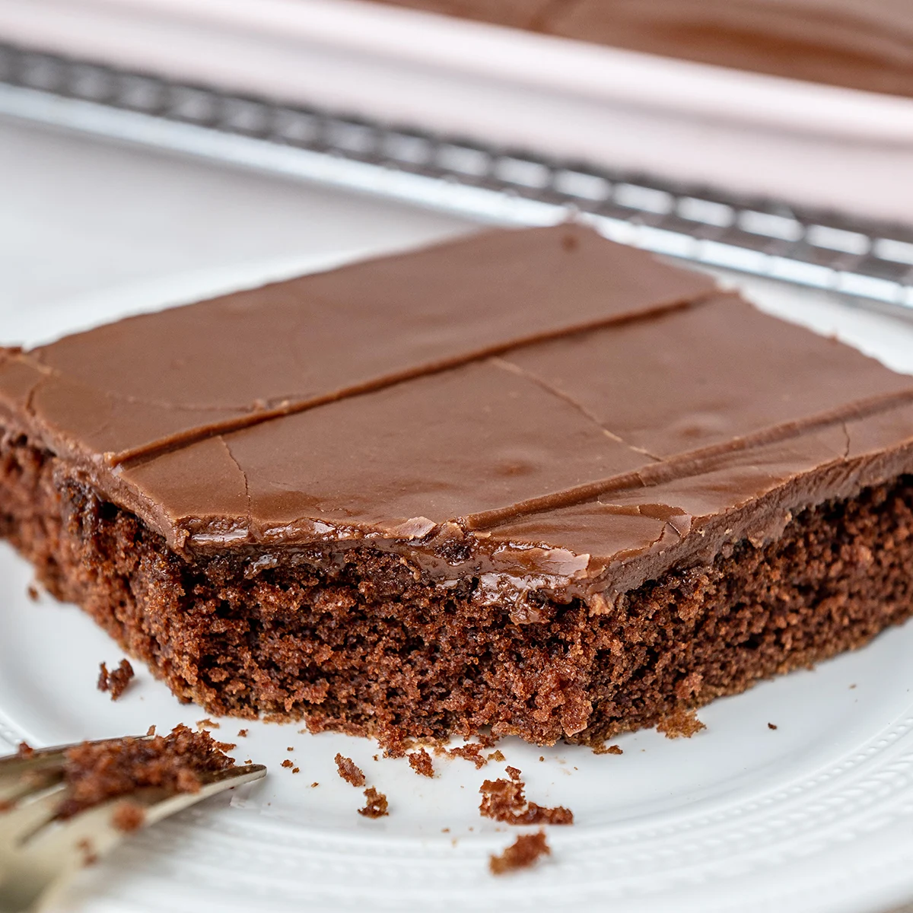

Texas Sheet Cake

Texas Sheet Cake
This Texas sheet cake is the perfect dessert for your next party, potluck, tailgate, or holiday get-together. A dense chocolate cake topped with a fudgy pourable icing, this Texas sheet cake recipe will satisfy any sweet tooth.
Ingridients
Cake
- 2 cups all-purpose flour
- 2 cups white sugar
- 1 teaspoon baking soda
- 1/2 teaspoon salt
- 1/2 cup sour cream
- 2 eggs
- 1 cup butter
- 1 cup water
- 5 tablespoons unsweetened cocoa powder
Icing
- 6 tablespoons milk
- 5 tablespoons unsweetened cocoa powder
- 1/2 cup butter
- 4 cups confectioners' sugar
- 1 teaspoon vanilla extract
- 1 cup chopped walnuts (optional)
Steps
- Preheat the oven to 350 degrees F (175 degrees C). Grease and flour a 10x15-inch jelly roll pan.
- Make cake: Combine flour, sugar, baking soda, and salt in a mixing bowl. Beat in sour cream and eggs.
- Melt butter in a saucepan over low heat. Stir in water and cocoa powder. Bring mixture to a boil then remove from the heat. Allow to cool slightly, then stir cocoa mixture into the flour and egg mixture until blended. Pour batter into the prepared pan.
- Bake in the preheated oven until a toothpick inserted into the center comes out clean, about 20 minutes.
- While the cake is baking, make icing: Combine milk, cocoa powder, and butter in a large saucepan over medium heat. Bring to a boil, then remove from heat. Stir in confectioners' sugar and vanilla, then fold in walnuts, mixing until blended.
- Spread icing over warm cake.